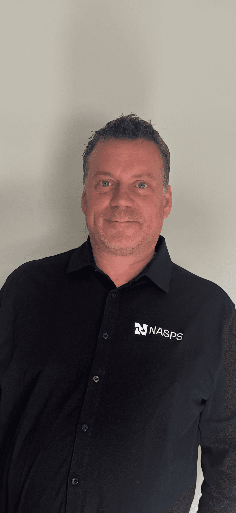

News
NASPS accelerates growth – Ingemar Andersson leads the push on SDA
We are building the foundations of the future – together with our customers.

NASPS accelerates growth – Ingemar Andersson leads the push on SDA
NASPS is strengthening its position in the foundation market and welcomes Ingemar Andersson as Sales Manager for SDA bars.
Ingemar took up his role on 1 April and has already made a clear mark on the market. Hitting the ground running, he has been out visiting customers across Sweden and secured the first deals – clear proof of demand and of NASPS's competitiveness.
As part of our offensive push, NASPS is now establishing a standardized, stocked program of R51/29, T76/51 and T76/45. With availability directly from stock, we are strengthening our delivery capability and creating the conditions for faster project execution for our customers.
In parallel, we are broadening our offering further by introducing rock bolts to the Swedish market. The range includes both steel and fiberglass bolts, developed to meet today's requirements in tunneling, rock reinforcement, and temporary and permanent installations.
With a clear growth agenda, a strong product range, and the right expertise in place, NASPS is taking the next step toward becoming a leading supplier within SDA and related systems in the Nordics.